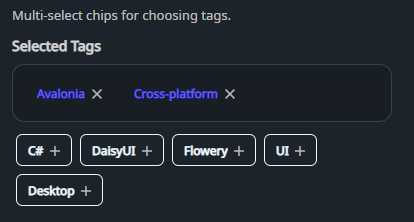

DaisyTagPicker is an organized tag selection component inspired by "Animated Tags". It separates selected tags into a distinct, bordered area with "remove" icons, while keeping available tags in a separate list with "add" icons.
* Organized Layout: Distinct areas for selected and available tags.
* Interactive Icons: Automatic "add" (Plus) and "remove" (Close) icons on tag chips.
* Customizable Title: Set the header for the selected tags area using the Title property.
* Flexible Sizing: Inherits DaisyUI size presets (ExtraSmall, Small, Medium, Large, ExtraLarge) for all chips.
* Two Modes: Standard selection mode or a library mode for managing a single tag set.
| Property | Description |
|---|---|
Tags (IList) |
Pool of all available tags. |
SelectedTags (IList) |
Currently selected tags. When null, managed internally. |
Mode (DaisyTagPickerMode) |
Tag interaction mode: Selection (default) or Library. |
Title (string) |
Header text for the selected tags box (default: "Selected Tags"). |
Size (DaisySize) |
Size preset for the tag chips (default Small). |
| Event | Description |
|---|---|
SelectionChanged |
Raised whenever the selection changes. |
<!-- Basic usage with internal selection -->
<controls:DaisyTagPicker Title="Selected Skills">
<controls:DaisyTagPicker.Tags>
<x:Array Type="{x:Type sys:String}">
<sys:String>Uno Platform</sys:String>
<sys:String>C#</sys:String>
<sys:String>DaisyUI</sys:String>
<sys:String>XAML</sys:String>
</x:Array>
</controls:DaisyTagPicker.Tags>
</controls:DaisyTagPicker>
<!-- MVVM binding -->
<controls:DaisyTagPicker Tags="{Binding AllTags}"
SelectedTags="{Binding UserTags, Mode=TwoWay}"
Title="Chosen Options"
Size="Medium" />
<!-- Library mode: manage the canonical tag set -->
<controls:DaisyTagPicker Tags="{Binding BoardTags}"
SelectedTags="{Binding BoardTags}"
Mode="Library"
Title="Available Tags"
Size="Small" />DaisyTagPickerMode controls how chips behave and how the two lists are treated:
* Selection (default): Standard picker behavior with two areas. Clicking a chip moves it between Selected and Available.
* Library: Treats tags as a single canonical set. All chips are shown in the Selected area, the Available area is hidden, and clicking a chip removes it from the set entirely. Adding a tag inserts it into the set and it remains selected.
Library mode is ideal when the UI is defining the available tags themselves (not choosing a subset). A common example is board-level tag management: the user is curating the list of tags that cards can later choose from. In that scenario:
* Newly added tags should always appear as selected.
* Removing a tag should delete it from the set, not just move it to "Available."
* Selection is string-based; ensure tag strings are unique.
* The control automatically filters the pool of Tags to only show unselected ones in the "Available" area.
* If you bind SelectedTags, the control mutates the list when it is writable.